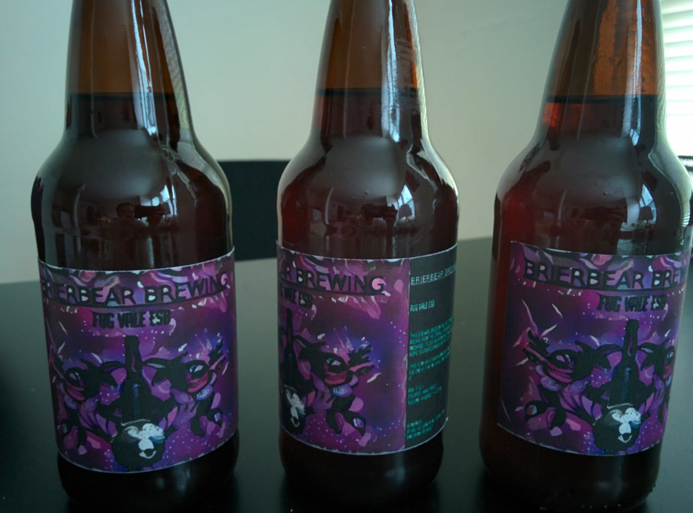

Brewing My First Beer¶
{kind=link}
Recently I got into homebrewing. I like beer so why wouldn’t I enjoy making beer?! For this first beer I ended up making an ESB I call the Fug Vale ESB. It was delicious, I only have two bottles left... I’m considering sending one to my brother, but then again, I could just drink it. Sorry Calvin!
Here are a few pictures of that whole process:
Getting Started¶
{kind=link}
Some starting materials: yeast and hops. The bowl is my way of keeping things sterile until I need them.
{kind=link}
This the the “cooking” part of the process, which turns out is way easier than I expected. You essentially just boil everything for awhile. The hardest part is finding a big pot to use!
Fermentation¶
{kind=link}
So here is the wort in primary fermentation, in my closet in my tiny apartment. For this first batch I was so impatient, I checked it multiple times a day. I almost panicked because it took almost 48h for the yeast to really get going.
{kind=link}
A week later: crusty! I’m siphoning the beer into a glass carboy for secondary fermentation (and more waiting).
{kind=link}
Taking a gravity reading and tasting! Yup, it’s beer!
{kind=link}
Here we are, in my room of requirement.
Bottling¶
{kind=link}
So two weeks later, it’s time to bottle. These bottles need to be sterilized
{kind=link}
Here’s about half the bottles. The aluminum foil is to prevent particles from falling in after I’ve sterilized the bottles. All said, I got 54x12oz bottles and 3x22 oz bottles, and one 16oz bottle.
{kind=link}
There is a wand that you can use to fill the bottles when siphoning.
{kind=link}
Caps need to be sterilized too!
{kind=link}
Beer after primary: a little cloudy.
{kind=link}
Beer after secondary: very clear!
{kind=link}
This capper pushes the caps onto the bottles.
{kind=link}
{kind=link}